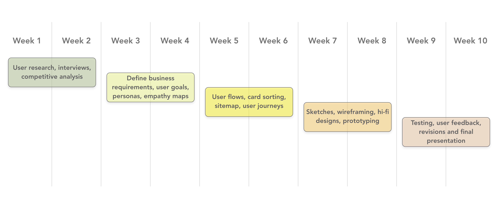

Project Context
The purpose of this project was to research the care practices of plant owners.
Accumulating plants inspired the question, "What would be the best wat to care
for multiple plants with different requirements?" A study by NASA revealed that
keeping plants in the home can eliminate up to 87% of toxins in the air within
24 hours. This emphasizes that keeping plants in the home is beneficial for our
health and learning how to properly care for plants can promote sustainability.
- Team: Individual
- Timeframe: 5 Weeks
- Tools Used:some text
Problem Statement
The Olive app user needs a way to organize and manage their personal and family healthcare accounts.
When required to use multiple apps to access and keep track of healthcare information, it becomes
complicated for the user to keep track of schedules, costs of visits, insurance claims, and communications
with providers.
We will know this to be true when Olive app users are able to link 2 or more healthcare accounts on one platform
and can access tools and personal information across one or more profiles.
Possbile Solution
A possible solution to this problem will be to create an app that will allow the user to integrate their insurance information, medical provider, dental, and vision care. This will give the user access to manage each of their healthcare accounts and information in one platform.
Design Process

Scope of Work & Timeline

Discover Phase
Design Strategy
Target Audience:
The target audience for this product is any user who is subscribed to an insurance plan
that has separate providers for vision and dental. The user will require all of their medical information on one
platform.
Competition:
Obvious competitors are other private medical providers such as Kaiser Permanente,
MyHealth, MyChart, and Carbon Health. A competitor would be any healthcare provider than offers medical, dental,
and vision in one platform.
Risk/Opportunity:
A risk to creating this app would be integrating the applications and information from a variety of medical providers.
There are not many apps that allow syncing, but one example would be TrueBill, a banking app, that syncs the information
so the user can access it in one application.
This provides an opportunity to create a more useful medical platform to eliminate using multiple apps for medical,
vision, dental, and insurance.
General Tasks:
- Allowing the user to easily schedule appointments with medical professional within their network.
- Enabling the user to correspond with their insurance company and access their medical information when necessary.
- Creating the app to be intuitive for users of all ages and have settings to accommodate their needs.
- Addressing the challenges in navigating through accessing healthcare through the user's network.
Business Objectives:
- Create a competitive responsive web application with the ability to integrate multiple medical information accounts Measured by: Initial user tests and number of medical companies
- Gain 1,000 new users within one month of launching Measured by: Application installation and sign-up count within first 60 days
- Allow integration of 100+ medical provider companies by launch date Measured by: The number of medical accounts synced within the app
Delivered by: 5 to 6 months from project start date
Delivered by: 60 days after product launch
Delivered by: 2 to 3 months from project start date
Interview Questions:
- How many applications do you use related to your healthcare?
- Through which platforms do you access your healthcare information?
- Do you manage the healthcare information for other people?
- What do you find the most challenging in managing your healthcare information?
- What process do you currently use to access your insurance information?
- How do you communicate or schedule appointments with your providers?
- What is the most important feature when accessing your healthcare information?
- When do you find yourself accessing your healthcare information the most?
- What information would you prefer to have accessible?
- What features do you think work well?
- Describe the process you use to schedule appointments.
- What steps do you take to find a provider?
Interview Insights

Communication:
- The participants prefer to call and speak with their provider.
- The participants did not find it easy to navigate through the application to access messaging.
- The participants will call their provider or insurance if they need information or clarification.
Finding A Doctor:
- The users found it challenging to find a new doctor that has availability.
- The participants need references and reviews before selecting a new provider.
- The participants need an easier way to receive and share referrals to schedule appointments with new providers.
Making Payments:
- Participants had no preference tot how they paid their bills.
- Participants preferred to know how much their visit would cost prior.
- Billing information is inconsistent between the provider and insurance company.
Dental/Vision Coverage:
- The participants did not have an app to access dental information.
- The participants need an easier way to schedule appointments, especially if multiple visits are necessary.
- Dental/vision information is not included with healthcare information.
Scheduling Appointments:
- Users feel reassured making appointments over the phone.
- The participants will use both the mobile app and desktop app to make appointments.
- The participants need to be able to easily make appointments when managing the information for other people.
Test Results:
- Participants used the app the most after their visits while waiting for test results.
- The participants had a common trend of not being able to understand their test results.
- Participants will prefer to call their provider for more information.
Competitive Analysis: Sutter Health

Sutter Health Care provides coordinated care to more than 3 million Californians. It is a not-for-profit organization that puts resources back into its communities. Sutter hospitals serve more of the Medi-Cal patient population in Northern California than any other health system.* With over 12K physicians and 2k advanced practice clinicians, Sutter had over 1.5 million outpatient care visits in the last year.
Define Phase
User Personas


Ideate Phase
User Flows
Objective:
Abby recently had tests taken at her last visit to her medical provider. They informed her that the results
will be available in their healthcare application and she will get a notification when they are ready.
Entry Point: Launch of application
Success Criteria: Reviewing test results

Objective:
Joe has just enrolled in a new insurance plan through his employer. He needs to link his insurance information within
his healthcare application to be able to view what visits will be covered.
Entry Point: Launch of application
Success Criteria: Adding insurance information to account

Card Sort
For this task, I asked for 5 participants to do a physical and open card sort for the Olive app. The participants sorted 40 cards into relevant categories.


Analysis:
My initial thoughts on doing a closed card sort was that it would be biased based on where I would intuitively find
information searching through a healthcare app. The open card sort gave a lot of insight to what topics can be found in
general categories but other topics could easily placed throughout the application.

100% of participants agreed on the placement for the topics on payments, test results, and messages. 80% of the
participants had varying thoughts on where to put “settings” and “privacy”. Moving forward, I would like to do more
research to see if a closed card sort would generalize the placement of topics that are currently spread out.
Sitemap